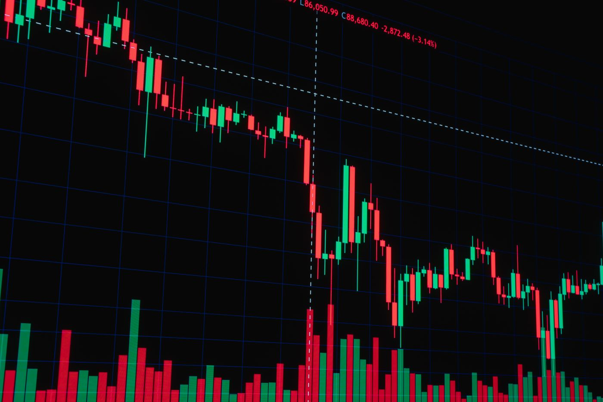
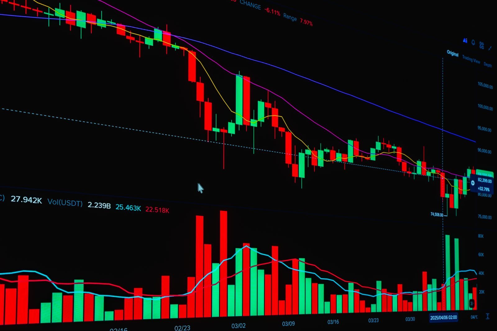

OVERVIEW
你会在每一章里看到什么




价值的账本 · 区块链与数字资产交易
从一次哈希计算，到一条 7×24 小时不间断的全球撮合网络；从法币如何一步步变成链上的一个私钥， 到百倍杠杆在 0.7% 的反向波动中如何归零。这套课程不绕弯子，把区块链的原理、货币的流动路径、 交易的实现机制、衍生品的定价与风险，以及搭建一个交易平台需要掌握的工程全貌，一次讲透。
顺序阅读是一次完整的学习路径；也可以跳到任一章，每一页都是自洽的。
哈希、非对称加密、数字签名、Merkle 树、UTXO 与账户模型。区块链不是「一种技术」，而是几种密码学原语的组合方式。
从工作量证明到权益证明，从比特币到智能合约。区块如何被打包、分叉如何收敛、51% 攻击为什么在数学上不划算。
真正的钱是怎么进来的：法币入金 → 稳定币铸造 → 现货成交 → 衍生品保证金。每一层的钱来自哪、去向哪、谁在收手续费。
订单簿如何运作、撮合引擎如何做到微秒级延迟、为什么可以 7×24 永不闭市、清算与结算在链上链下如何分工。
永续合约的资金费率、逐仓与全仓、强平引擎的触发逻辑、期权希腊字母与隐含波动率。杠杆放大的是收益，也等比放大爆仓概率。
要做一个交易平台需要掌握什么：账务系统与复式记账、撮合内核、行情推送、风控与清算、钱包与冷热分离、合规牌照。

看懂一个机制最快的方式，是把它拆开、改一个参数、观察结果。
读第三章 · 资金流路径，然后跳到第五章的爆仓计算器。这两页回答的是大多数人的真实困惑。
从第六章 · 平台开发入手。里面有账务模型、撮合内核、风控清算与合规路径的完整梳理，以及一张技术栈全景图。
本站全部内容为技术原理与工程机制的教学讲解，不构成任何投资建议、不推荐任何具体币种或交易平台。虚拟货币价格波动极端、各国监管政策差异巨大，杠杆与衍生品交易可能导致本金全部损失。
站内所有行情、K 线、订单簿与账户数据均为前端生成的模拟数据，仅用于演示机制，与任何真实市场无关。